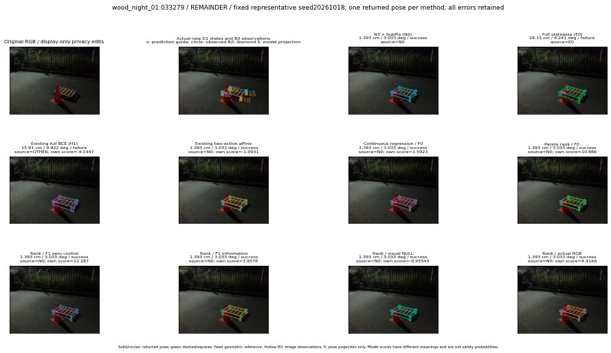

실선은 반환 자세, 초록 점선은 고정 기하 참조입니다. S는 영상 관측이 아닙니다. 점수는 모델별 의미가 다르며 보정된 안전 확률이 아닙니다. 개인정보 처리는 표시 사본에만 적용했습니다.
| 방법·seed | 위치 / 회전 / 공동성공 | 실제 출처 | 선택 후보 | 각 모델 자체 점수 |
|---|---|---|---|---|
| N0 | 1.393 cm / 3.033 deg / success | N0 | N/A | N/A |
| E0 | 29.15 cm / 4.241 deg / failure | E0 | N/A | N/A |
| E0_REGENERATED | 29.15 cm / 4.241 deg / failure | E0 | E0_REGENERATED | N/A |
| POSEFIX_SUBPIX_PF_ANCHOR | 1.053 cm / 4.087 deg / success | OTHER | N/A | N/A |
| POSEFIX_SUBPIX_YOLO_ANCHOR | 1.053 cm / 4.087 deg / success | OTHER | N/A | N/A |
| D1_H1_MLP_s20261018 | 15.91 cm / 9.922 deg / failure | OTHER | WD0/ORIGINAL_WD/sample/25 | -4.14471435546875 |
| D1_H1_MLP_s20261019 | 15.91 cm / 9.922 deg / failure | OTHER | WD0/ORIGINAL_WD/sample/25 | -3.9563851356506348 |
| D1_H1_MLP_s20261020 | 15.91 cm / 9.922 deg / failure | OTHER | WD0/ORIGINAL_WD/sample/25 | -4.315657138824463 |
| D1_H1_PAIR_MLP_s20261018 | 1.393 cm / 3.033 deg / success | N0 | N0 | -2.2326056957244873 |
| D1_H1_PAIR_MLP_s20261019 | 1.393 cm / 3.033 deg / success | N0 | N0 | -2.232203960418701 |
| D1_H1_PAIR_MLP_s20261020 | 1.393 cm / 3.033 deg / success | N0 | N0 | -2.886080503463745 |
| D1_H1_PAIR_ROLE_AFFINE_s20261018 | 1.393 cm / 3.033 deg / success | N0 | N0 | -1.093083381652832 |
| D1_H1_PAIR_ROLE_AFFINE_s20261019 | 1.393 cm / 3.033 deg / success | N0 | N0 | -1.102118730545044 |
| D1_H1_PAIR_ROLE_AFFINE_s20261020 | 1.393 cm / 3.033 deg / success | N0 | N0 | -1.0515345335006714 |
| R_CONT_F0_s20261018 | 1.393 cm / 3.033 deg / success | N0 | N0 | 1.592313289642334 |
| R_CONT_F0_s20261019 | 1.393 cm / 3.033 deg / success | N0 | N0 | 1.612381100654602 |
| R_CONT_F0_s20261020 | 1.393 cm / 3.033 deg / success | N0 | N0 | 1.554917573928833 |
| R_ORDER_F0_s20261018 | 1.393 cm / 3.033 deg / success | N0 | N0 | 10.886362075805664 |
| R_ORDER_F0_s20261019 | 1.393 cm / 3.033 deg / success | N0 | N0 | 6.207406044006348 |
| R_ORDER_F0_s20261020 | 1.393 cm / 3.033 deg / success | N0 | N0 | -10.927983283996582 |
| R_ORDER_F1_ZERO_s20261018 | 1.393 cm / 3.033 deg / success | N0 | N0 | 12.286674499511719 |
| R_ORDER_F1_ZERO_s20261019 | 1.393 cm / 3.033 deg / success | N0 | N0 | 12.11550235748291 |
| R_ORDER_F1_ZERO_s20261020 | 1.393 cm / 3.033 deg / success | N0 | N0 | 7.6126322746276855 |
| R_ORDER_F1_s20261018 | 1.393 cm / 3.033 deg / success | N0 | N0 | 3.9578232765197754 |
| R_ORDER_F1_s20261019 | 1.393 cm / 3.033 deg / success | N0 | N0 | 3.693488359451294 |
| R_ORDER_F1_s20261020 | 1.393 cm / 3.033 deg / success | N0 | N0 | 1.6227545738220215 |
| V_ORDER_NULL_s20261018 | 1.393 cm / 3.033 deg / success | N0 | N0 | -0.955431342124939 |
| V_ORDER_NULL_s20261019 | 1.393 cm / 3.033 deg / success | N0 | N0 | -0.2259562909603119 |
| V_ORDER_NULL_s20261020 | 1.393 cm / 3.033 deg / success | N0 | N0 | 3.0830471515655518 |
| V_ORDER_RGB_s20261018 | 1.393 cm / 3.033 deg / success | N0 | N0 | 4.416604518890381 |
| V_ORDER_RGB_s20261019 | 1.393 cm / 3.033 deg / success | N0 | N0 | -0.7518271207809448 |
| V_ORDER_RGB_s20261020 | 1.393 cm / 3.033 deg / success | N0 | N0 | -8.090107917785645 |